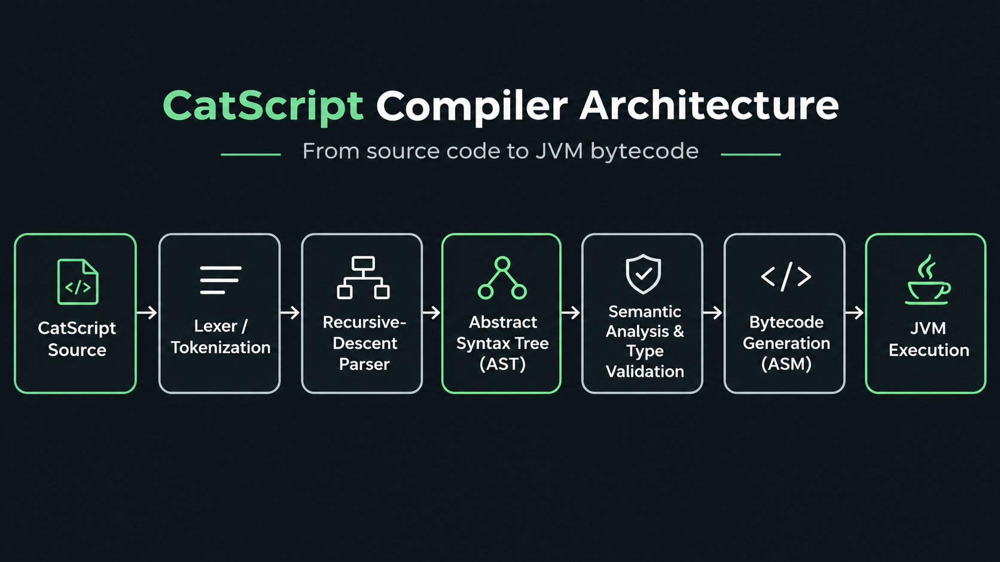

Montana State University · CSCI 468
Compiler Pipeline
The project exercises lexical analysis, recursive-descent parsing, abstract syntax tree construction, semantic analysis, and bytecode generation targeting the Java Virtual Machine through ASM. Features include expressions, variables, conditionals, loops, and functions.

Language specification
CatScript Grammar
CatScript's syntax is defined using Extended Backus–Naur Form (EBNF). The grammar describes the language's statements, expressions, function declarations, and type system.
catscript.ebnf View full grammar
catscript_program = { program_statement };
program_statement = statement |
function_declaration;
statement = for_statement |
if_statement |
print_statement |
variable_statement |
assignment_statement |
return_statement |
function_call_statement;
for_statement = 'for', '(', IDENTIFIER, 'in', expression ')',
'{', { statement }, '}';
if_statement = 'if', '(', expression, ')', '{',
{ statement },
'}' [ 'else', ( if_statement | '{', { statement }, '}' ) ];
print_statement = 'print', '(', expression, ')'
variable_statement = 'var', IDENTIFIER,
[':', type_expression, ] '=', expression;
function_call_statement = function_call;
assignment_statement = IDENTIFIER, '=', expression;
function_declaration = 'function', IDENTIFIER, '(', parameter_list, ')' +
[ ':' + type_expression ], '{', { statement }, '}';
parameter_list = [ parameter, {',' parameter } ];
parameter = IDENTIFIER [ , ':', type_expression ];
return_statement = 'return' [, expression];
expression = equality_expression;
equality_expression = comparison_expression { ("!=" | "==") comparison_expression };
comparison_expression = additive_expression { (">" | ">=" | "<" | "<=" ) additive_expression };
additive_expression = factor_expression { ("+" | "-" ) factor_expression };
factor_expression = unary_expression { ("/" | "*" ) unary_expression };
unary_expression = ( "not" | "-" ) unary_expression | primary_expression;
primary_expression = IDENTIFIER | STRING | INTEGER | "true" | "false" | "null"|
list_literal | function_call | "(", expression, ")"
list_literal = '[', expression, { ',', expression } ']';
function_call = IDENTIFIER, '(', argument_list , ')'
argument_list = [ expression , { ',' , expression } ]
type_expression = 'int' | 'string' | 'bool' | 'object' | 'list' [, '<' , type_expression, '>']
Grammar shown for technical reference. Compiler implementation and supporting source code are maintained in a private repository.
Validation
I used a provided JUnit test suite extensively, inspecting their expectations to guide implementation, diagnose issues, and check compiler behavior.
CatScript was independently implemented as part of my computer science coursework at Montana State University. Because the assignment and its supporting materials remain in academic use, the implementation is maintained privately.
This page documents the compiler's architecture, language features, and development process without distributing the source code.